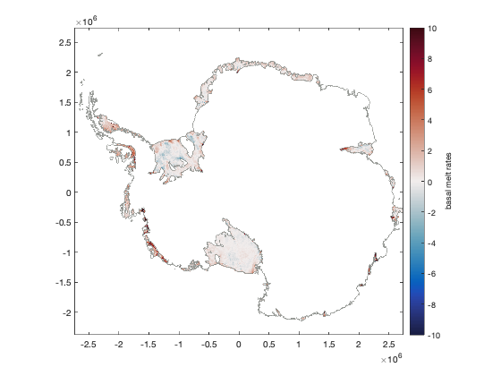
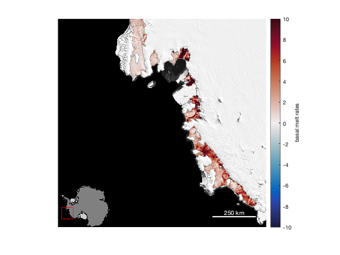
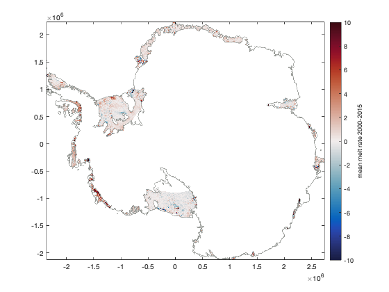
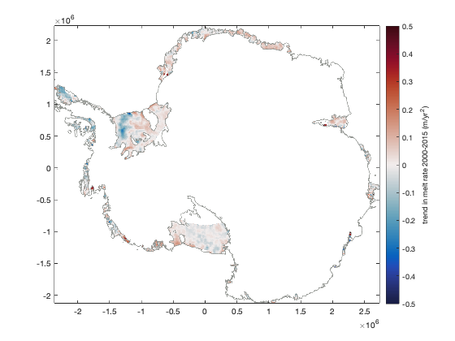
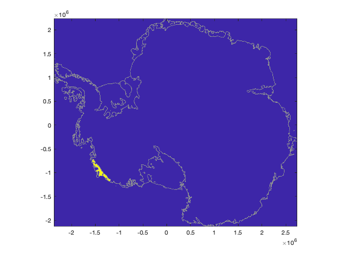
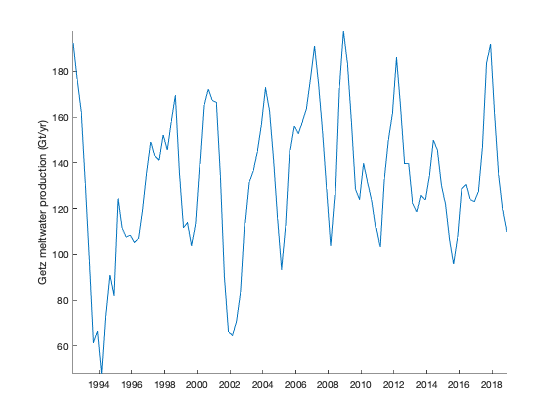

melt_data_adusumilli documentation
melt_data_adusumilli loads ice shelf melt rate data from Adusumilli et al., 2020.
Contents
Syntax
[M,x,y] = melt_data_adusumilli
[M,x,y,t] = melt_data_adusumilli('timeseries')Description
[M,x,y] = melt_data_adusumilli loads the 500 m resolution w_b mosaic of basal meltrates (m/yr) that spans 2010-2018. Missing data are filled with the w_b_interp variable, which assumes a depth-dependent melt rate that was calculated separately for each ice shelf. Output variables x and y are in polar stereographic (ps71) meters.
[M,x,y,t] = melt_data_adusumilli('timeseries') loads the 10 km resolution, quarterly (four times a year) data cube of surface elevation anomalies from 1992 to 2018, then converts to melt rates. It's important to note that Adusumilli's dataset does not actually contain a timeseries of melt rates, so this function uses the ITS_LIVE velocity mosaic and BedMachine ice thickness to account for divergence (which I calculated as constant through time despite possible evidence to the contrary). The output variable t is in Matlab's datenum format, which is the number of days since the strike of midnight of the year zero.
Requirements
- The 500 m resolution static grid requires Antarctic iceshelf melt rate data which can be found at the UCSD repository under the Components heading.
- The timeseries data requires the Antarctic iceshelf height change data from the UCSD repository under the Components heading. But the time series does not actually contain melt rates.
Example 1:
Make a map of basal melt rates. This example uses imagescn from the Climate Data Toolbox (Greene et al., 2019), which is just a version of imagesc that makes NaNs transprent. Also the bedmachine function draws gounding lines for context, and cmocean sets a divergent colormap.
[M,x,y] = melt_data_adusumilli; figure imagescn(x,y,M) bedmachine % draws gounding lines and coast lines cb = colorbar; ylabel(cb,'basal melt rates') caxis([-1 1]*10) cmocean balance % colormap
Zoom in on the Amundsen Sea, and put a MODIS Mosaic of Antarctica under there:
mapzoomps('amundsen sea','mapwidth',1200,'inset','sw','frame','off') modismoaps('contrast','white') scalebarps('color','w','location','se') axis off
Example 2: Time series data
The time series data is given at 10 km resolution, at 3 month intervals, and it takes a few seconds to load and calculate. I should reiterate here that the melt rate time series results from my own calculations applied to the Adusumilli data--My conversion of the surface elevation anomaly time series into basal melt rates relies on the assumption of constant velocity and constant ice thickness, which neglects any effects of time-varying divergence. Use with caution.
Get the melt rate time series and plot the mean melt rate for the period 2000 to 2015:
% Load the data: [M,x,y,t] = melt_data_adusumilli('timeseries'); % Get indices of dates of interest: ind = t>datenum('jan 1, 2000') & t<datenum('jan 1, 2015'); % Calculate the mean melt rate for times of interest: M_mean = mean(M(:,:,ind),3); figure imagescn(x,y,M_mean) bedmachine caxis([-1 1]*10) cb = colorbar; ylabel(cb,'mean melt rate 2000-2015') cmocean bal
Map of melt rate trends
Using the data we loaded above, use the same philosophy, but calculate the trend in melt rate instead of the mean. Here we're using the trend function from the Climate Data Toolbox for Matlab (Greene et al., 2019). Note that we have to divide time by 365 to convert datenum format (serial days) into units that the trend function will then spit out as meters of melt per year.
M_trend = trend(M(:,:,ind),t(ind)/365); figure imagescn(x,y,M_trend) bedmachine caxis([-1 1]*0.5) cb = colorbar; ylabel(cb,'trend in melt rate 2000-2015 (m/yr^2)') cmocean bal
Plot a time series of meltwater production
Perhaps you want to know how much meltwater was produced by Getz Ice Shelf each year since 1992. To get a time series of meltwater for a specified area, first you must define a mask. Here we can use the isiceshelf function from Antarctic Mapping Tools to get the Getz Ice Shelf mask.
Start by using meshgrid to make a an X,Y grid that will have coordinates for each grid point, then use isiceshelf to determine which of those grid points fall within the outline of Getz.
[X,Y] = meshgrid(x,y); mask = isiceshelf(X,Y,'Getz'); figure imagescn(x,y,mask) bedmachine % plots coastlines for context
Perfect. Above we have a yellow pixel for each of the 10 km grid cells inside the boundaries of Getz Ice Shelf.
The local function in the Climate Data Toolbox is the easiest way to use that mask to make a time series. The only hard part in this process will be converting ice melt rate (m/yr) into total mass rate (Gt/yr). To do that, multiply each grid cell by its area (10e3^2 meters), which gives volume of ice per year, per grid cell. Multiply volume by the density of ice (917 kg/m^3) to then get mass rate in kg/yr. Multiply that by 1e-12 to convert kg/yr to Gt/yr.
Notice we're plotting the one-year (four datapoints at 3 month resolution) because on shorter timescales the gradients are pretty noisy.
massrate_getz = local(M,mask,@sum,'omitnan')*10e3^2*917*1e-12; figure plot(t,movmean(massrate_getz,4)) axis tight box off datetick('x','keeplimits') ylabel('Getz meltwater production (Gt/yr)')
The numbers above are in line with the 145 Gt/yr reported by <https://science.sciencemag.org/content/341/6143/266/tab-figures-data Rignot et al., 2013).
Citing this data
Please cite Susheel's dataset if you use this data! Also, this function does operate on the data, so if you don't mind, please also cite Antarctic Mapping Tools.
Adusumilli, Susheel; Fricker, Helen A.; Medley, Brooke C.; Padman, Laurie; Siegfried, Matthew R. (2020). Data from: Interannual variations in meltwater input to the Southern Ocean from Antarctic ice shelves. UC San Diego Library Digital Collections. https://doi.org/10.6075/J04Q7SHT
Greene, C. A., Gwyther, D. E., & Blankenship, D. D. Antarctic Mapping Tools for Matlab. Computers & Geosciences. 104 (2017) pp.151-157. http://dx.doi.org/10.1016/j.cageo.2016.08.003
Author Info
This function and supporting documentation were written by Chad A. Greene of NASA Jet Propulsion Laboratory, October 2020.